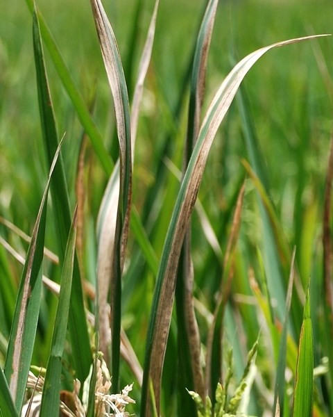

Bacterial blight
What it does
Bacterial blight is caused by Xanthomonas oryzae pv. oryzae.
It causes wilting of seedlings and yellowing and drying of leaves.
Why and where it occurs
The disease is most likely to develop in areas that have weeds and stubbles of infected plants. It can occur in both tropical and temperate environments, particularly in irrigated and rainfed lowland areas. In general, the disease favors temperatures at 25−34°C, with relative humidity above 70%.
It is commonly observed when strong winds and continuous heavy rains occur, allowing the disease-causing bacteria to easily spread through ooze droplets on lesions of infected plants.
Bacterial blight can be severe in susceptible rice varieties under high nitrogen fertilization.
How to identify
Check for wilting and yellowing of leaves, or wilting of seedlings (also called kresek).
On seedlings, infected leaves turn grayish green and roll up. As the disease progresses, the leaves turn yellow to straw-colored and wilt, leading whole seedlings to dry up and die.
Kresek on seedlings may sometimes be confused with early rice stem borer damage.
To distinguish kresek symptoms from stem borer damage, squeeze the lower end of infected seedlings between the fingers. Kresek symptoms should show yellowish bacterial ooze coming out of the cut ends. Unlike plants infested with stem borer, rice plants with kresek are not easily pulled out from soil.

Check for lesions:
- On older plants, lesions usually develop as water-soaked to yellow-orange stripes on leaf blades or leaf tips or on mechanically injured parts of leaves. Lesions have a wavy margin and progress toward the leaf base.
- On young lesions, bacterial ooze resembling a milky dew drop can be observed early in the morning. The bacterial ooze later on dries up and becomes small yellowish beads underneath the leaf.
- Old lesions turn yellow to grayish white with black dots due to the growth of various saprophytic fungi. On severely infected leaves, lesions may extend to the leaf sheath.
To quickly diagnose bacterial blight on leaf:
- cut a young lesion across and place in a transparent glass container with clear water
- after a few minutes, hold the container against light and observe for thick or turbid liquid coming from the cut end of the leaf
Why is it important
Bacterial blight is one of the most serious diseases of rice. The earlier the disease occurs, the higher the yield loss.
Yield loss due to bacterial blight can be as much as 70% when susceptible varieties are grown, in environments favorable to the disease.
When plants are infected at booting stage, bacterial blight does not affect yield but results in poor quality grains and a high proportion of broken kernels.
How to manage
Planting resistant varieties has been proven to be the most efficient, most reliable, and cheapest way to control bacterial blight.
Other disease control options include:
- Use balanced amounts of plant nutrients, especially nitrogen.
- Ensure good drainage of fields (in conventionally flooded crops) and nurseries.
- Keep fields clean. Remove weed hosts and plow under rice stubble, straw, rice ratoons and volunteer seedlings, which can serve as hosts of bacteria.
- Allow fallow fields to dry in order to suppress disease agents in the soil and plant residues.
-
Content expert: Jo Catindig (email: j.catindig@irri.org) and Bryce Blackman (email: b.blackman@irri.orgp).
Disclaimer: All information are taken from http://www.knowledgebank.irri.org/